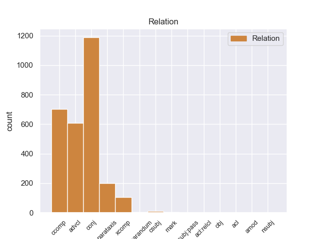
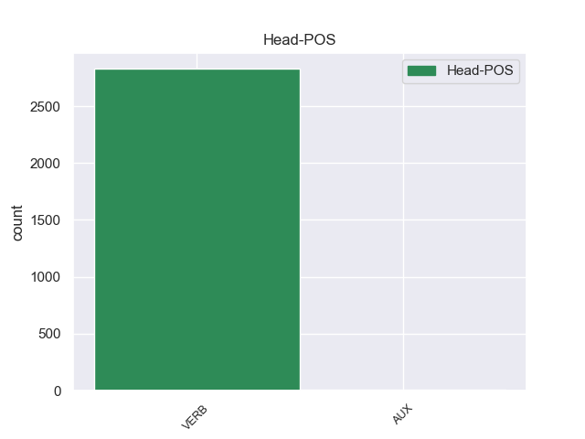
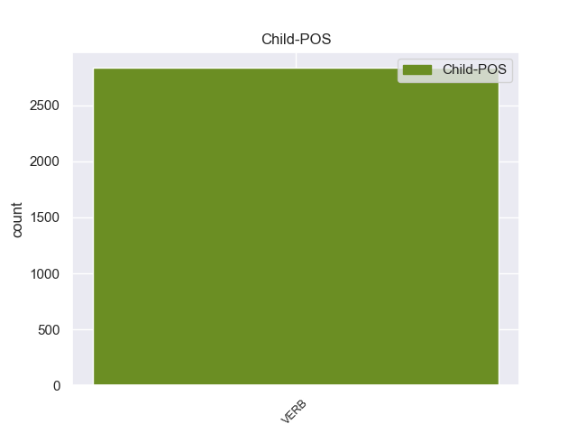

Distribution of features within this leaf



Agreement Rules sorted by frequency.
- When the dependent token is the conjunct(conj) of the head token, and the dependent token is VERB.
1 A _ _ _ _ 0 _ _ _
2 few _ _ _ _ 0 _ _ _
3 minutes _ _ _ _ 0 _ _ _
4 after _ _ _ _ 0 _ _ _
5 I _ _ _ _ 0 _ _ _
6 left _ _ _ _ 0 _ _ _
7 , _ _ _ _ 0 _ _ _
8 I _ _ _ _ 0 _ _ _
9 was _ _ _ _ 0 _ _ _
10 called call VERB VBN Tense=Past|VerbForm=Part|Voice=Pass 0 _ _ _
11 and _ _ _ _ 0 _ _ _
12 informed inform VERB VBN Tense=Past|VerbForm=Part 10 conj 10:conj:and _
13 that _ _ _ _ 0 _ _ _
14 " _ _ _ _ 0 _ _ _
15 I _ _ _ _ 0 _ _ _
16 " _ _ _ _ 0 _ _ _
17 left _ _ _ _ 0 _ _ _
18 my _ _ _ _ 0 _ _ _
19 wheel _ _ _ _ 0 _ _ _
20 lock _ _ _ _ 0 _ _ _
21 ( _ _ _ _ 0 _ _ _
22 which _ _ _ _ 0 _ _ _
23 they _ _ _ _ 0 _ _ _
24 should _ _ _ _ 0 _ _ _
25 have _ _ _ _ 0 _ _ _
26 left _ _ _ _ 0 _ _ _
27 in _ _ _ _ 0 _ _ _
28 the _ _ _ _ 0 _ _ _
29 car _ _ _ _ 0 _ _ _
30 ) _ _ _ _ 0 _ _ _
31 . _ _ _ _ 0 _ _ _
1 A _ _ _ _ 0 _ _ _
2 few _ _ _ _ 0 _ _ _
3 minutes _ _ _ _ 0 _ _ _
4 after _ _ _ _ 0 _ _ _
5 I _ _ _ _ 0 _ _ _
6 left leave VERB VBD Mood=Ind|Tense=Past|VerbForm=Fin 10 advcl 10:advcl:after SpaceAfter=No
7 , _ _ _ _ 0 _ _ _
8 I _ _ _ _ 0 _ _ _
9 was _ _ _ _ 0 _ _ _
10 called call VERB VBN Tense=Past|VerbForm=Part|Voice=Pass 0 _ _ _
11 and _ _ _ _ 0 _ _ _
12 informed _ _ _ _ 0 _ _ _
13 that _ _ _ _ 0 _ _ _
14 " _ _ _ _ 0 _ _ _
15 I _ _ _ _ 0 _ _ _
16 " _ _ _ _ 0 _ _ _
17 left _ _ _ _ 0 _ _ _
18 my _ _ _ _ 0 _ _ _
19 wheel _ _ _ _ 0 _ _ _
20 lock _ _ _ _ 0 _ _ _
21 ( _ _ _ _ 0 _ _ _
22 which _ _ _ _ 0 _ _ _
23 they _ _ _ _ 0 _ _ _
24 should _ _ _ _ 0 _ _ _
25 have _ _ _ _ 0 _ _ _
26 left _ _ _ _ 0 _ _ _
27 in _ _ _ _ 0 _ _ _
28 the _ _ _ _ 0 _ _ _
29 car _ _ _ _ 0 _ _ _
30 ) _ _ _ _ 0 _ _ _
31 . _ _ _ _ 0 _ _ _
1 A _ _ _ _ 0 _ _ _
2 few _ _ _ _ 0 _ _ _
3 minutes _ _ _ _ 0 _ _ _
4 after _ _ _ _ 0 _ _ _
5 I _ _ _ _ 0 _ _ _
6 left _ _ _ _ 0 _ _ _
7 , _ _ _ _ 0 _ _ _
8 I _ _ _ _ 0 _ _ _
9 was _ _ _ _ 0 _ _ _
10 called _ _ _ _ 0 _ _ _
11 and _ _ _ _ 0 _ _ _
12 informed inform VERB VBN Tense=Past|VerbForm=Part 0 _ _ _
13 that _ _ _ _ 0 _ _ _
14 " _ _ _ _ 0 _ _ _
15 I _ _ _ _ 0 _ _ _
16 " _ _ _ _ 0 _ _ _
17 left leave VERB VBD Mood=Ind|Tense=Past|VerbForm=Fin 12 ccomp 12:ccomp _
18 my _ _ _ _ 0 _ _ _
19 wheel _ _ _ _ 0 _ _ _
20 lock _ _ _ _ 0 _ _ _
21 ( _ _ _ _ 0 _ _ _
22 which _ _ _ _ 0 _ _ _
23 they _ _ _ _ 0 _ _ _
24 should _ _ _ _ 0 _ _ _
25 have _ _ _ _ 0 _ _ _
26 left _ _ _ _ 0 _ _ _
27 in _ _ _ _ 0 _ _ _
28 the _ _ _ _ 0 _ _ _
29 car _ _ _ _ 0 _ _ _
30 ) _ _ _ _ 0 _ _ _
31 . _ _ _ _ 0 _ _ _
1 They _ _ _ _ 0 _ _ _
2 promised promise VERB VBD Mood=Ind|Tense=Past|VerbForm=Fin 0 _ _ _
3 it _ _ _ _ 0 _ _ _
4 'd _ _ _ _ 0 _ _ _
5 be _ _ _ _ 0 _ _ _
6 done _ _ _ _ 0 _ _ _
7 within _ _ _ _ 0 _ _ _
8 an _ _ _ _ 0 _ _ _
9 hour _ _ _ _ 0 _ _ _
10 , _ _ _ _ 0 _ _ _
11 so _ _ _ _ 0 _ _ _
12 I _ _ _ _ 0 _ _ _
13 waited wait VERB VBD Mood=Ind|Tense=Past|VerbForm=Fin 2 parataxis 2:parataxis _
14 in _ _ _ _ 0 _ _ _
15 the _ _ _ _ 0 _ _ _
16 lobby _ _ _ _ 0 _ _ _
17 . _ _ _ _ 0 _ _ _
1 So _ _ _ _ 0 _ _ _
2 I _ _ _ _ 0 _ _ _
3 got get VERB VBD Mood=Ind|Tense=Past|VerbForm=Fin 0 _ _ _
4 just _ _ _ _ 0 _ _ _
5 my _ _ _ _ 0 _ _ _
6 other _ _ _ _ 0 _ _ _
7 rear _ _ _ _ 0 _ _ _
8 tire _ _ _ _ 0 _ _ _
9 replaced replace VERB VBN Tense=Past|VerbForm=Part 3 xcomp 3:xcomp SpaceAfter=No
10 . _ _ _ _ 0 _ _ _
1 What _ _ _ _ 0 _ _ _
2 made make VERB VBD Mood=Ind|Tense=Past|VerbForm=Fin 5 csubj 5:csubj _
3 it _ _ _ _ 0 _ _ _
4 perfect _ _ _ _ 0 _ _ _
5 was be VERB VBD Mood=Ind|Number=Sing|Tense=Past|VerbForm=Fin 0 _ _ _
6 that _ _ _ _ 0 _ _ _
7 they _ _ _ _ 0 _ _ _
8 offered _ _ _ _ 0 _ _ _
9 transportation _ _ _ _ 0 _ _ _
10 so _ _ _ _ 0 _ _ _
11 that _ _ _ _ 0 _ _ _
12 I _ _ _ _ 0 _ _ _
13 would _ _ _ _ 0 _ _ _
14 not _ _ _ _ 0 _ _ _
15 have _ _ _ _ 0 _ _ _
16 to _ _ _ _ 0 _ _ _
17 wait _ _ _ _ 0 _ _ _
18 there _ _ _ _ 0 _ _ _
19 or _ _ _ _ 0 _ _ _
20 take _ _ _ _ 0 _ _ _
21 time _ _ _ _ 0 _ _ _
22 off _ _ _ _ 0 _ _ _
23 of _ _ _ _ 0 _ _ _
24 work _ _ _ _ 0 _ _ _
25 to _ _ _ _ 0 _ _ _
26 go _ _ _ _ 0 _ _ _
27 back _ _ _ _ 0 _ _ _
28 and _ _ _ _ 0 _ _ _
29 forth _ _ _ _ 0 _ _ _
30 or _ _ _ _ 0 _ _ _
31 try _ _ _ _ 0 _ _ _
32 to _ _ _ _ 0 _ _ _
33 find _ _ _ _ 0 _ _ _
34 a _ _ _ _ 0 _ _ _
35 ride _ _ _ _ 0 _ _ _
36 . _ _ _ _ 0 _ _ _
1 He _ _ _ _ 0 _ _ _
2 tried _ _ _ _ 0 _ _ _
3 to _ _ _ _ 0 _ _ _
4 tell _ _ _ _ 0 _ _ _
5 me _ _ _ _ 0 _ _ _
6 it _ _ _ _ 0 _ _ _
7 was _ _ _ _ 0 _ _ _
8 when _ _ _ _ 0 _ _ _
9 I _ _ _ _ 0 _ _ _
10 told tell VERB VBD Mood=Ind|Tense=Past|VerbForm=Fin 11 reparandum 11:reparandum _
11 asked ask VERB VBD Mood=Ind|Tense=Past|VerbForm=Fin 0 _ _ _
12 him _ _ _ _ 0 _ _ _
13 if _ _ _ _ 0 _ _ _
14 he _ _ _ _ 0 _ _ _
15 knew _ _ _ _ 0 _ _ _
16 what _ _ _ _ 0 _ _ _
17 fps _ _ _ _ 0 _ _ _
18 stood _ _ _ _ 0 _ _ _
19 for _ _ _ _ 0 _ _ _
20 and _ _ _ _ 0 _ _ _
21 he _ _ _ _ 0 _ _ _
22 had _ _ _ _ 0 _ _ _
23 no _ _ _ _ 0 _ _ _
24 clue _ _ _ _ 0 _ _ _
25 . _ _ _ _ 0 _ _ _
1 It _ _ _ _ 0 _ _ _
2 was _ _ _ _ 0 _ _ _
3 no _ _ _ _ 0 _ _ _
4 problem _ _ _ _ 0 _ _ _
5 to _ _ _ _ 0 _ _ _
6 get _ _ _ _ 0 _ _ _
7 PROVIDED provide VERB VBN Tense=Past|VerbForm=Part 11 mark 11:mark _
8 the _ _ _ _ 0 _ _ _
9 birth _ _ _ _ 0 _ _ _
10 was _ _ _ _ 0 _ _ _
11 registered register VERB VBN Tense=Past|VerbForm=Part|Voice=Pass 0 _ _ _
12 in _ _ _ _ 0 _ _ _
13 the _ _ _ _ 0 _ _ _
14 first _ _ _ _ 0 _ _ _
15 place _ _ _ _ 0 _ _ _
16 . _ _ _ _ 0 _ _ _
1 What _ _ _ _ 0 _ _ _
2 followed follow VERB VBD Mood=Ind|Tense=Past|VerbForm=Fin 7 csubj:pass 7:csubj:pass _
3 the _ _ _ _ 0 _ _ _
4 next _ _ _ _ 0 _ _ _
5 day _ _ _ _ 0 _ _ _
6 is _ _ _ _ 0 _ _ _
7 considered consider VERB VBN Tense=Past|VerbForm=Part|Voice=Pass 0 _ _ _
8 by _ _ _ _ 0 _ _ _
9 the _ _ _ _ 0 _ _ _
10 governor _ _ _ _ 0 _ _ _
11 and _ _ _ _ 0 _ _ _
12 Dunn _ _ _ _ 0 _ _ _
13 to _ _ _ _ 0 _ _ _
14 be _ _ _ _ 0 _ _ _
15 the _ _ _ _ 0 _ _ _
16 pivotal _ _ _ _ 0 _ _ _
17 moment _ _ _ _ 0 _ _ _
18 of _ _ _ _ 0 _ _ _
19 the _ _ _ _ 0 _ _ _
20 energy _ _ _ _ 0 _ _ _
21 crisis _ _ _ _ 0 _ _ _
22 . _ _ _ _ 0 _ _ _
1 Just _ _ _ _ 0 _ _ _
2 my _ _ _ _ 0 _ _ _
3 opinion _ _ _ _ 0 _ _ _
4 here _ _ _ _ 0 _ _ _
5 - _ _ _ _ 0 _ _ _
6 no _ _ _ _ 0 _ _ _
7 judgement _ _ _ _ 0 _ _ _
8 - _ _ _ _ 0 _ _ _
9 getting _ _ _ _ 0 _ _ _
10 your _ _ _ _ 0 _ _ _
11 snake _ _ _ _ 0 _ _ _
12 on _ _ _ _ 0 _ _ _
13 frozen freeze VERB VBN Tense=Past|VerbForm=Part 0 _ _ _
14 / _ _ _ _ 0 _ _ _
15 thawed thaw VERB VBN Tense=Past|VerbForm=Part 13 amod 13:amod _
16 will _ _ _ _ 0 _ _ _
17 prove _ _ _ _ 0 _ _ _
18 to _ _ _ _ 0 _ _ _
19 be _ _ _ _ 0 _ _ _
20 much _ _ _ _ 0 _ _ _
21 easier _ _ _ _ 0 _ _ _
22 for _ _ _ _ 0 _ _ _
23 you _ _ _ _ 0 _ _ _
24 and _ _ _ _ 0 _ _ _
25 safer _ _ _ _ 0 _ _ _
26 for _ _ _ _ 0 _ _ _
27 your _ _ _ _ 0 _ _ _
28 snake _ _ _ _ 0 _ _ _
29 in _ _ _ _ 0 _ _ _
30 the _ _ _ _ 0 _ _ _
31 long _ _ _ _ 0 _ _ _
32 run _ _ _ _ 0 _ _ _
33 . _ _ _ _ 0 _ _ _
1 Again _ _ _ _ 0 _ _ _
2 there _ _ _ _ 0 _ _ _
3 is be VERB VBZ Mood=Ind|Number=Sing|Person=3|Tense=Pres|VerbForm=Fin 0 _ _ _
4 no _ _ _ _ 0 _ _ _
5 official _ _ _ _ 0 _ _ _
6 written _ _ _ _ 0 _ _ _
7 statement _ _ _ _ 0 _ _ _
8 from _ _ _ _ 0 _ _ _
9 Sistani _ _ _ _ 0 _ _ _
10 's _ _ _ _ 0 _ _ _
11 office _ _ _ _ 0 _ _ _
12 confirming _ _ _ _ 0 _ _ _
13 this _ _ _ _ 0 _ _ _
14 allegation _ _ _ _ 0 _ _ _
15 , _ _ _ _ 0 _ _ _
16 which _ _ _ _ 0 _ _ _
17 I _ _ _ _ 0 _ _ _
18 think think VERB VBP Mood=Ind|Tense=Pres|VerbForm=Fin 3 acl:relcl 3:acl:relcl _
19 is _ _ _ _ 0 _ _ _
20 intentional _ _ _ _ 0 _ _ _
21 . _ _ _ _ 0 _ _ _
1 Older _ _ _ _ 0 _ _ _
2 males male VERB VBZ Mood=Ind|Number=Sing|Person=3|Tense=Pres|VerbForm=Fin 4 nsubj 4:nsubj|6:nsubj:xsubj _
3 often _ _ _ _ 0 _ _ _
4 tend tend VERB VBP Mood=Ind|Tense=Pres|VerbForm=Fin 0 _ _ _
5 to _ _ _ _ 0 _ _ _
6 have _ _ _ _ 0 _ _ _
7 urinary _ _ _ _ 0 _ _ _
8 tract _ _ _ _ 0 _ _ _
9 issues _ _ _ _ 0 _ _ _
10 , _ _ _ _ 0 _ _ _
11 so _ _ _ _ 0 _ _ _
12 your _ _ _ _ 0 _ _ _
13 cat _ _ _ _ 0 _ _ _
14 has _ _ _ _ 0 _ _ _
15 done _ _ _ _ 0 _ _ _
16 very _ _ _ _ 0 _ _ _
17 well _ _ _ _ 0 _ _ _
18 . _ _ _ _ 0 _ _ _
Disagree Examples:
1 Al _ _ _ _ 0 _ _ _
2 - _ _ _ _ 0 _ _ _
3 Sharq _ _ _ _ 0 _ _ _
4 al _ _ _ _ 0 _ _ _
5 - _ _ _ _ 0 _ _ _
6 Awsat _ _ _ _ 0 _ _ _
7 reports report VERB VBZ Mood=Ind|Number=Sing|Person=3|Tense=Pres|VerbForm=Fin 0 _ _ _
8 that _ _ _ _ 0 _ _ _
9 a _ _ _ _ 0 _ _ _
10 key _ _ _ _ 0 _ _ _
11 eyewitness _ _ _ _ 0 _ _ _
12 in _ _ _ _ 0 _ _ _
13 the _ _ _ _ 0 _ _ _
14 trial _ _ _ _ 0 _ _ _
15 of _ _ _ _ 0 _ _ _
16 Saddam _ _ _ _ 0 _ _ _
17 Hussein _ _ _ _ 0 _ _ _
18 for _ _ _ _ 0 _ _ _
19 a _ _ _ _ 0 _ _ _
20 1982 _ _ _ _ 0 _ _ _
21 massacre _ _ _ _ 0 _ _ _
22 at _ _ _ _ 0 _ _ _
23 Dujail _ _ _ _ 0 _ _ _
24 has _ _ _ _ 0 _ _ _
25 died die VERB VBN Tense=Past|VerbForm=Part 7 ccomp 7:ccomp SpaceAfter=No
26 . _ _ _ _ 0 _ _ _
1 My _ _ _ _ 0 _ _ _
2 neighbourhood _ _ _ _ 0 _ _ _
3 has _ _ _ _ 0 _ _ _
4 been _ _ _ _ 0 _ _ _
5 surrounded surround VERB VBN Tense=Past|VerbForm=Part|Voice=Pass 0 _ _ _
6 by _ _ _ _ 0 _ _ _
7 American _ _ _ _ 0 _ _ _
8 troops _ _ _ _ 0 _ _ _
9 for _ _ _ _ 0 _ _ _
10 three _ _ _ _ 0 _ _ _
11 days _ _ _ _ 0 _ _ _
12 now _ _ _ _ 0 _ _ _
13 , _ _ _ _ 0 _ _ _
14 helicopters _ _ _ _ 0 _ _ _
15 have _ _ _ _ 0 _ _ _
16 been _ _ _ _ 0 _ _ _
17 circling circle VERB VBG Tense=Pres|VerbForm=Part 5 parataxis 5:parataxis _
18 over _ _ _ _ 0 _ _ _
19 our _ _ _ _ 0 _ _ _
20 heads _ _ _ _ 0 _ _ _
21 non-stop _ _ _ _ 0 _ _ _
22 . _ _ _ _ 0 _ _ _
1 Yesterday _ _ _ _ 0 _ _ _
2 there _ _ _ _ 0 _ _ _
3 were be VERB VBD Mood=Ind|Tense=Past|VerbForm=Fin 0 _ _ _
4 tens _ _ _ _ 0 _ _ _
5 of _ _ _ _ 0 _ _ _
6 them _ _ _ _ 0 _ _ _
7 putting _ _ _ _ 0 _ _ _
8 road _ _ _ _ 0 _ _ _
9 blocks _ _ _ _ 0 _ _ _
10 on _ _ _ _ 0 _ _ _
11 our _ _ _ _ 0 _ _ _
12 street _ _ _ _ 0 _ _ _
13 and _ _ _ _ 0 _ _ _
14 setting _ _ _ _ 0 _ _ _
15 up _ _ _ _ 0 _ _ _
16 mortars _ _ _ _ 0 _ _ _
17 , _ _ _ _ 0 _ _ _
18 they _ _ _ _ 0 _ _ _
19 only _ _ _ _ 0 _ _ _
20 come come VERB VBP Mood=Ind|Tense=Pres|VerbForm=Fin 3 parataxis 3:parataxis _
21 out _ _ _ _ 0 _ _ _
22 in _ _ _ _ 0 _ _ _
23 the _ _ _ _ 0 _ _ _
24 open _ _ _ _ 0 _ _ _
25 when _ _ _ _ 0 _ _ _
26 Americans _ _ _ _ 0 _ _ _
27 leave _ _ _ _ 0 _ _ _
28 the _ _ _ _ 0 _ _ _
29 area _ _ _ _ 0 _ _ _
30 , _ _ _ _ 0 _ _ _
31 then _ _ _ _ 0 _ _ _
32 they _ _ _ _ 0 _ _ _
33 start _ _ _ _ 0 _ _ _
34 firing _ _ _ _ 0 _ _ _
35 mortars _ _ _ _ 0 _ _ _
36 indiscriminately _ _ _ _ 0 _ _ _
37 and _ _ _ _ 0 _ _ _
38 shooting _ _ _ _ 0 _ _ _
39 their _ _ _ _ 0 _ _ _
40 AK _ _ _ _ 0 _ _ _
41 - _ _ _ _ 0 _ _ _
42 47's _ _ _ _ 0 _ _ _
43 in _ _ _ _ 0 _ _ _
44 the _ _ _ _ 0 _ _ _
45 air _ _ _ _ 0 _ _ _
46 . _ _ _ _ 0 _ _ _
1 Even _ _ _ _ 0 _ _ _
2 the _ _ _ _ 0 _ _ _
3 IP _ _ _ _ 0 _ _ _
4 and _ _ _ _ 0 _ _ _
5 ICDC _ _ _ _ 0 _ _ _
6 have _ _ _ _ 0 _ _ _
7 abandoned abandon VERB VBN Tense=Past|VerbForm=Part 0 _ _ _
8 the _ _ _ _ 0 _ _ _
9 neighbourhood _ _ _ _ 0 _ _ _
10 , _ _ _ _ 0 _ _ _
11 and _ _ _ _ 0 _ _ _
12 those _ _ _ _ 0 _ _ _
13 are _ _ _ _ 0 _ _ _
14 trained _ _ _ _ 0 _ _ _
15 and _ _ _ _ 0 _ _ _
16 armed _ _ _ _ 0 _ _ _
17 , _ _ _ _ 0 _ _ _
18 so _ _ _ _ 0 _ _ _
19 do _ _ _ _ 0 _ _ _
20 n't _ _ _ _ 0 _ _ _
21 expect _ _ _ _ 0 _ _ _
22 scared _ _ _ _ 0 _ _ _
23 civilians _ _ _ _ 0 _ _ _
24 to _ _ _ _ 0 _ _ _
25 do _ _ _ _ 0 _ _ _
26 anything _ _ _ _ 0 _ _ _
27 except _ _ _ _ 0 _ _ _
28 to _ _ _ _ 0 _ _ _
29 hide _ _ _ _ 0 _ _ _
30 inside _ _ _ _ 0 _ _ _
31 and _ _ _ _ 0 _ _ _
32 pray _ _ _ _ 0 _ _ _
33 a _ _ _ _ 0 _ _ _
34 helicopter _ _ _ _ 0 _ _ _
35 or _ _ _ _ 0 _ _ _
36 a _ _ _ _ 0 _ _ _
37 tank _ _ _ _ 0 _ _ _
38 does _ _ _ _ 0 _ _ _
39 n't _ _ _ _ 0 _ _ _
40 bomb _ _ _ _ 0 _ _ _
41 them _ _ _ _ 0 _ _ _
42 , _ _ _ _ 0 _ _ _
43 and _ _ _ _ 0 _ _ _
44 also _ _ _ _ 0 _ _ _
45 how _ _ _ _ 0 _ _ _
46 are _ _ _ _ 0 _ _ _
47 American _ _ _ _ 0 _ _ _
48 soldiers _ _ _ _ 0 _ _ _
49 going go VERB VBG Tense=Pres|VerbForm=Part 7 conj 7:conj:and _
50 to _ _ _ _ 0 _ _ _
51 distinguish _ _ _ _ 0 _ _ _
52 the _ _ _ _ 0 _ _ _
53 brave _ _ _ _ 0 _ _ _
54 and _ _ _ _ 0 _ _ _
55 valiant _ _ _ _ 0 _ _ _
56 civilians _ _ _ _ 0 _ _ _
57 from _ _ _ _ 0 _ _ _
58 the _ _ _ _ 0 _ _ _
59 Fedayeen _ _ _ _ 0 _ _ _
60 ? _ _ _ _ 0 _ _ _
1 Most _ _ _ _ 0 _ _ _
2 people _ _ _ _ 0 _ _ _
3 have _ _ _ _ 0 _ _ _
4 n't _ _ _ _ 0 _ _ _
5 gone go VERB VBN Tense=Past|VerbForm=Part 0 _ _ _
6 to _ _ _ _ 0 _ _ _
7 work _ _ _ _ 0 _ _ _
8 the _ _ _ _ 0 _ _ _
9 last _ _ _ _ 0 _ _ _
10 few _ _ _ _ 0 _ _ _
11 days _ _ _ _ 0 _ _ _
12 , _ _ _ _ 0 _ _ _
13 although _ _ _ _ 0 _ _ _
14 it _ _ _ _ 0 _ _ _
15 seems seem VERB VBZ Mood=Ind|Number=Sing|Person=3|Tense=Pres|VerbForm=Fin 5 advcl 5:advcl:although _
16 that _ _ _ _ 0 _ _ _
17 the _ _ _ _ 0 _ _ _
18 rest _ _ _ _ 0 _ _ _
19 of _ _ _ _ 0 _ _ _
20 Baghdad _ _ _ _ 0 _ _ _
21 is _ _ _ _ 0 _ _ _
22 ' _ _ _ _ 0 _ _ _
23 normal _ _ _ _ 0 _ _ _
24 ' _ _ _ _ 0 _ _ _
25 ( _ _ _ _ 0 _ _ _
26 if _ _ _ _ 0 _ _ _
27 you _ _ _ _ 0 _ _ _
28 can _ _ _ _ 0 _ _ _
29 define _ _ _ _ 0 _ _ _
30 what _ _ _ _ 0 _ _ _
31 normal _ _ _ _ 0 _ _ _
32 is _ _ _ _ 0 _ _ _
33 ) _ _ _ _ 0 _ _ _
34 . _ _ _ _ 0 _ _ _